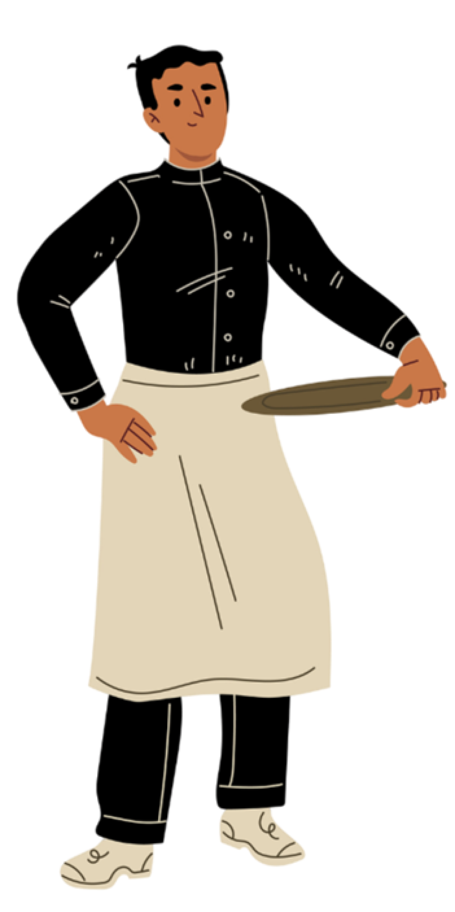

Restaurante
Qual é a taxa percentual que o aplicativo cobra sobre as vendas de alimentos?
Como posso entrar em contato com o restaurante em caso de dúvidas adicionais ou para fornecer feedback?
Quais são os benefícios para os clientes ao comprar alimentos excedentes em comparação com os itens regulares?
O restaurante tem um programa para doar ou redistribuir os alimentos excedentes que não são vendidos?
Quais são os horários em que os alimentos excedentes geralmente estão disponíveis para compra?
